バージョン 15.4 (1540) ・ MacBook Air M5 ・ 2026年10月更新
2026年10月7日（日本時間）公開の15.4では、Qwen3-ASRの対応拡大、録音中の容量不足対策、SpaceXAIのクラウド文字起こし、会議録音の権限・音質改善が行われました。15系で加わった大きな変更もまとめて確認します。
文字起こしをフォルダ・サブフォルダに分け、ドラッグ操作で整理できます。
録音と同時に話者識別付きのライブ文字起こしを表示します。
30言語に対応する高精度ローカルモデル。15.4で対応するM1 Macにも拡大しました。
空き容量が少なくなると警告し、ディスクが満杯になる前に録音を安全に止めます。
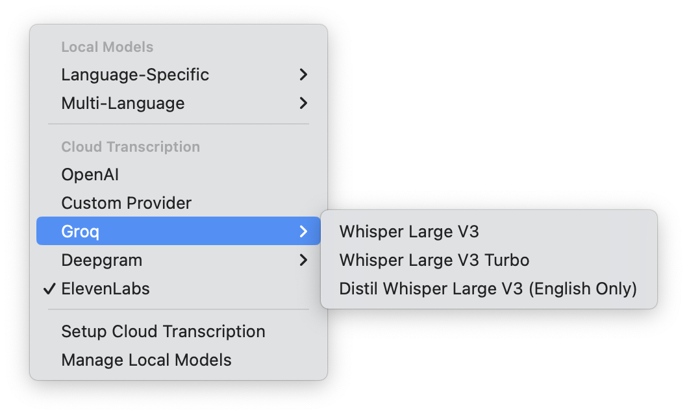
出典：MacWhisper公式ヘルプ「Cloud Transcription」。画像は旧版の画面例です。15.4ではGeminiやSpaceXAIを含む対応サービスが増えています。
| バージョン | 主な変更 |
|---|---|
| 15.4 | Qwen3-ASRのM1対応、録音中の容量不足対策、SpaceXAIのGrok Voice Transcribe 2、CoreAudioによる会議・アプリ音声録音を追加。 |
| 15.3 | 話者認識をNemotronまたはPyannoteから選択可能にし、Tencent Meeting・VooV Meetingへ対応。監視フォルダの信頼性も改善。 |
| 15.2〜15.2.1 | Nemotron 3で最大8話者を識別。ライブ会議文字起こしを標準でONにし、AIサービスの接続テストを追加。 |
| 15.1 | Qwen3-ASRを追加。30言語のファイル文字起こし、ライブ会議、Live Captionsに対応。 |
| 15.0.1 | フォルダ整理、ライブ会議文字起こし、共有メニュー、Spotlight・Siri・Shortcuts連携、Markdown書き出しを追加。 |
| 14.8.1 | Gemini 3.5 Transcribeを追加。話者区別、単語タイムスタンプ、複数言語の自動判定に対応。 |
確認先：MacWhisper公式更新フィード ／ MacWhisper公式リリースノート
▲ 目次へ戻るアプリを起動すると最初に表示される画面です。左側のサイドバーに主要な機能ボタンが並びます。
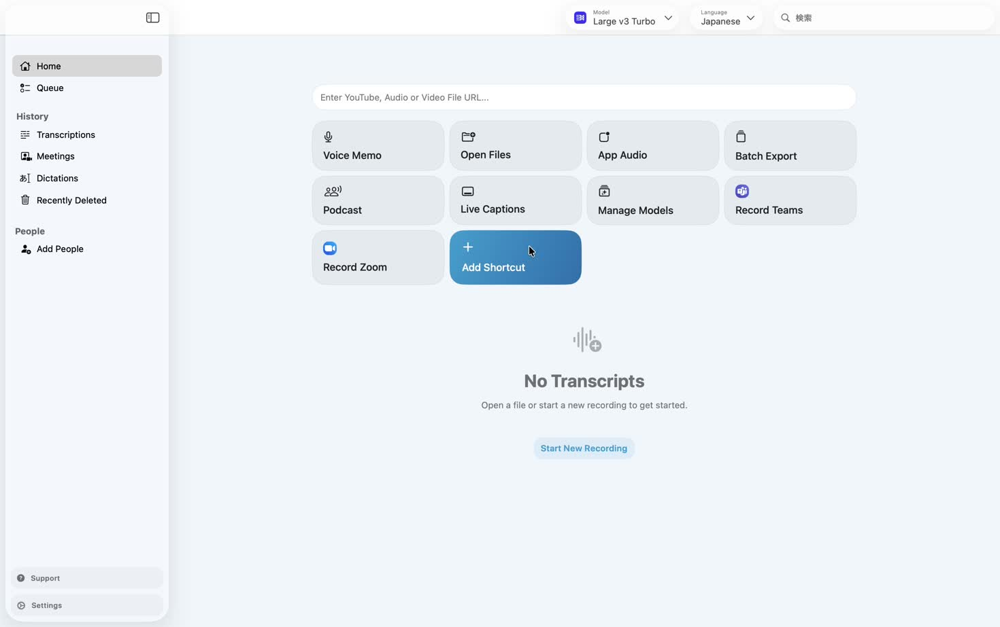
| 項目名 | 種別 | 説明 |
|---|---|---|
| MacWhisper Pro（ロゴ/タイトル） | 表示 | アプリ名。クリックするとホームに戻ります。 |
| Voice Memo（ボイスメモ） | ボタン | Macのマイクを使ってすぐに録音を開始します。最もよく使う基本機能です。 |
| Open Files（ファイルを開く） | ボタン | すでに録音済みの音声・動画ファイル（mp3, wav, mov, mp4等）を選んで文字起こしします。 |
| App Audio（アプリ音声） | ボタン | 特定のアプリ（Zoom, Chrome, Claudeなど）の音声だけをキャプチャして文字起こしします。 |
| Batch Export（バッチエクスポート） | ボタン | 複数の音声ファイルをまとめて文字起こし＆一括エクスポートします。大量ファイルを処理するときに便利。 |
| Podcast（ポッドキャスト） | ボタン | ポッドキャストのRSSフィードや音声URLを入力して文字起こしします。 |
| Live Captions（ライブキャプション） | ボタン | リアルタイムで音声を認識しながら字幕をオーバーレイ表示します。会議中の字幕表示に最適。 |
| Record Teams（Teams録音） | ボタン | Microsoft Teamsの会議音声を録音して文字起こしします。 |
| Record Zoom（Zoom録音） | ボタン | Zoomの会議音声を録音して文字起こしします。 |
| Transcriptions（文字起こし一覧） | ナビ | 過去に行った文字起こしの履歴一覧画面へ移動します。 |
| Recently Deleted（最近削除したもの） | ナビ | 削除した文字起こしが一時的に保存されます。30日以内なら復元できます。 |
| サイドバー表示切替（☰） | ボタン | 左側のサイドバーを開閉します。画面を広く使いたいときに非表示にできます。 |
| 設定（歯車アイコン ⚙） | ボタン | 各種設定画面を開きます。モデル管理・エクスポート形式・AIサービスなどを設定します。 |
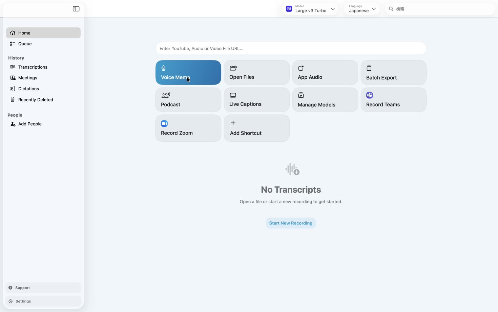
| 項目名 | 種別 | 説明 |
|---|---|---|
| Voice Memo（ボイスメモ） | ボタン | カーソルを乗せると強調表示されます。クリックするとすぐにMacのマイクで録音を開始。停止ボタンを押すまで録音し続けます。 |
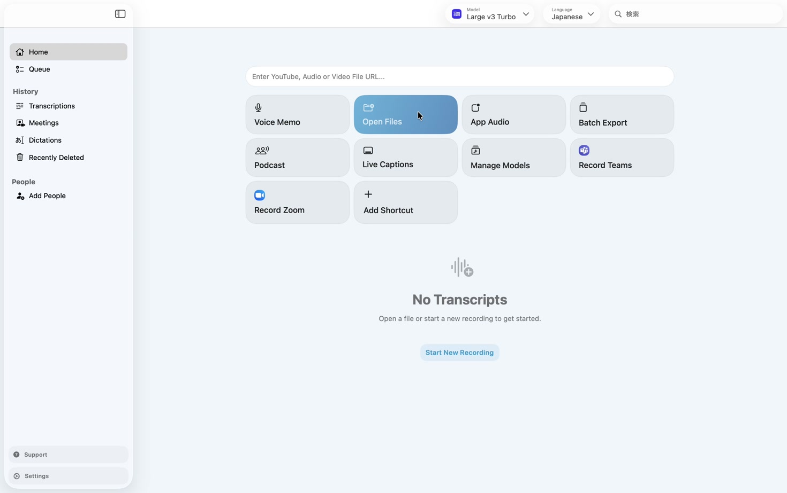
| 項目名 | 種別 | 説明 |
|---|---|---|
| Open Files（ファイルを開く） | ボタン | クリックするとファイル選択ダイアログが開きます。対応形式：mp3 / wav / m4a / ogg / opus / mov / mp4など。複数ファイルを同時選択することも可能です。 |
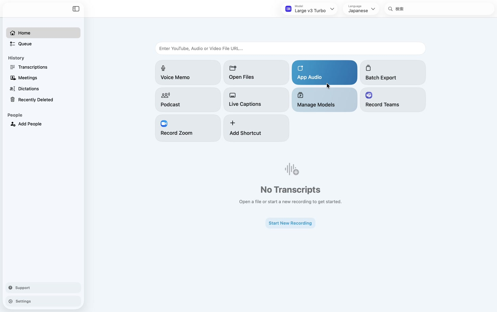
| 項目名 | 種別 | 説明 |
|---|---|---|
| App Audio（アプリ音声） | ボタン | 特定のアプリが出力する音声だけをキャプチャします。例：Zoomの相手の声だけを録音するなど。クリックするとアプリ選択画面が表示されます。 |
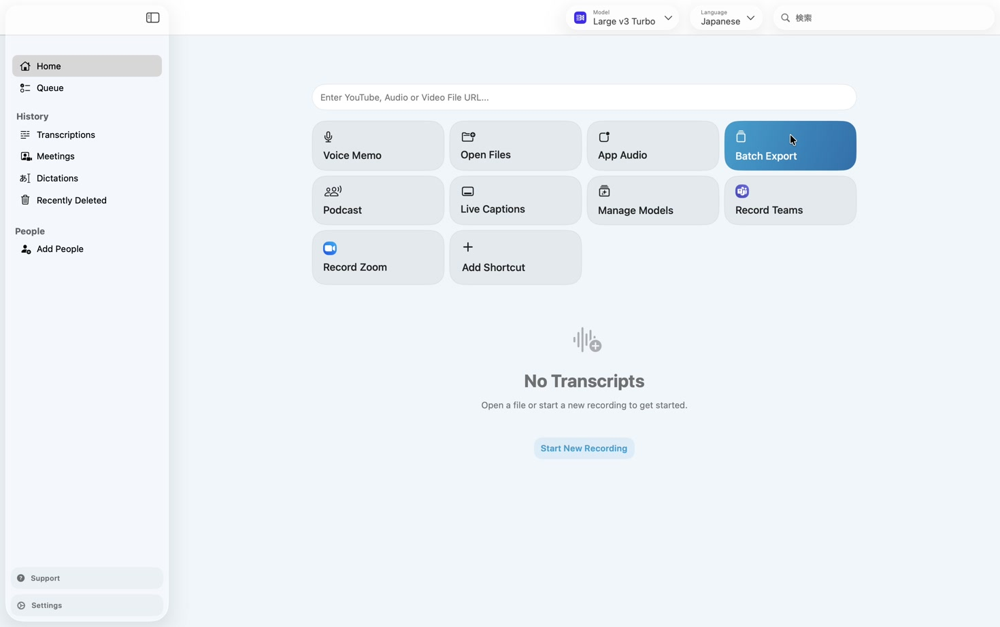
| 項目名 | 種別 | 説明 |
|---|---|---|
| Batch Export（バッチエクスポート） | ボタン | 複数の音声ファイルをフォルダごと選択し、まとめて文字起こしして一括保存します。大量のインタビュー音源や講義録音を処理するときに使います。 |
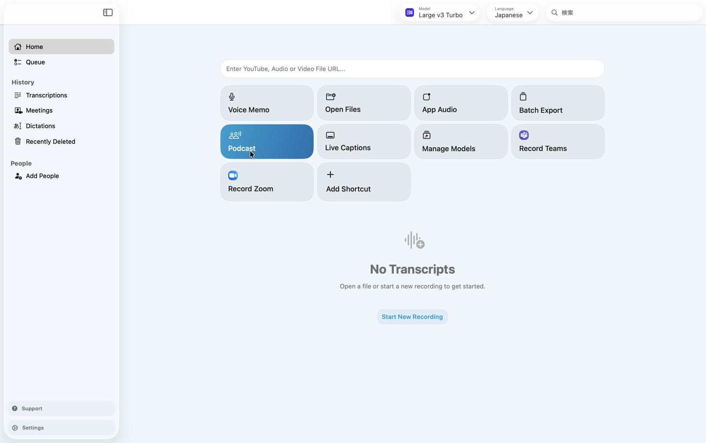
| 項目名 | 種別 | 説明 |
|---|---|---|
| Podcast（ポッドキャスト） | ボタン | RSSフィードURLやポッドキャストエピソードの音声URLを入力すると、自動でダウンロード＆文字起こしします。 |
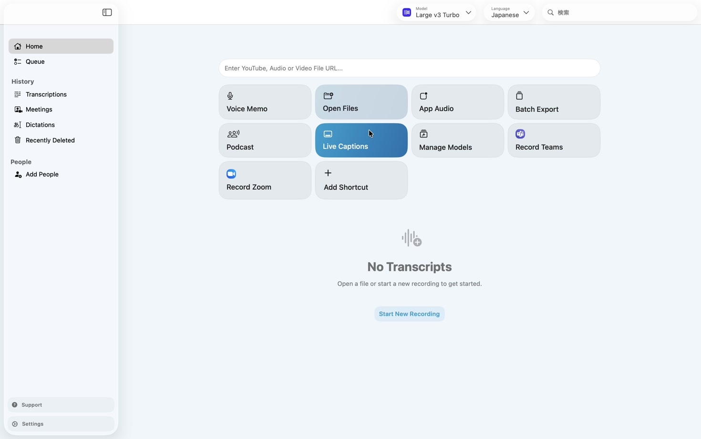
| 項目名 | 種別 | 説明 |
|---|---|---|
| Live Captions（ライブキャプション） | ボタン | 話した言葉をリアルタイムで認識し、画面上に字幕として表示します。聴覚に障害がある方や、外国語会議での字幕表示にも便利です。 |
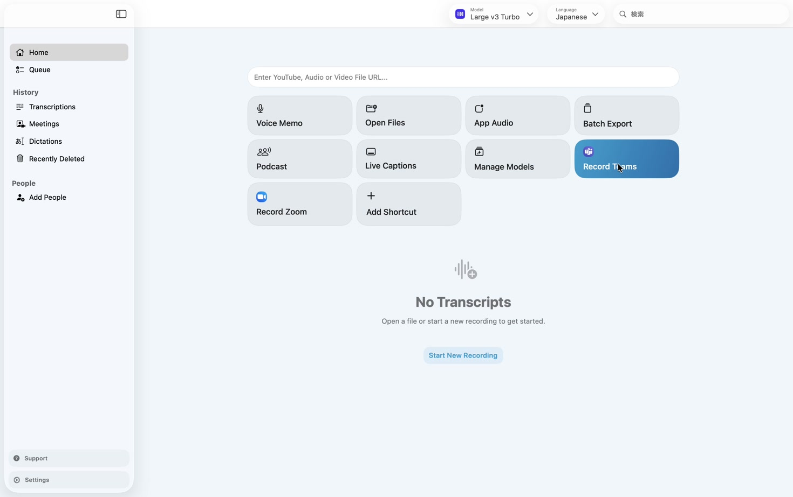
| 項目名 | 種別 | 説明 |
|---|---|---|
| Record Teams（Teams録音） | ボタン | Microsoft Teamsを起動した状態でこのボタンを押すと、会議音声を自動で録音・文字起こしします。相手の声とマイクの両方を収録します。 |
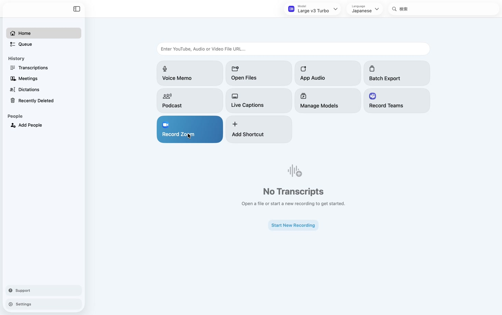
| 項目名 | 種別 | 説明 |
|---|---|---|
| Record Zoom（Zoom録音） | ボタン | Zoomを起動した状態でこのボタンを押すと、会議音声を自動で録音・文字起こしします。 |
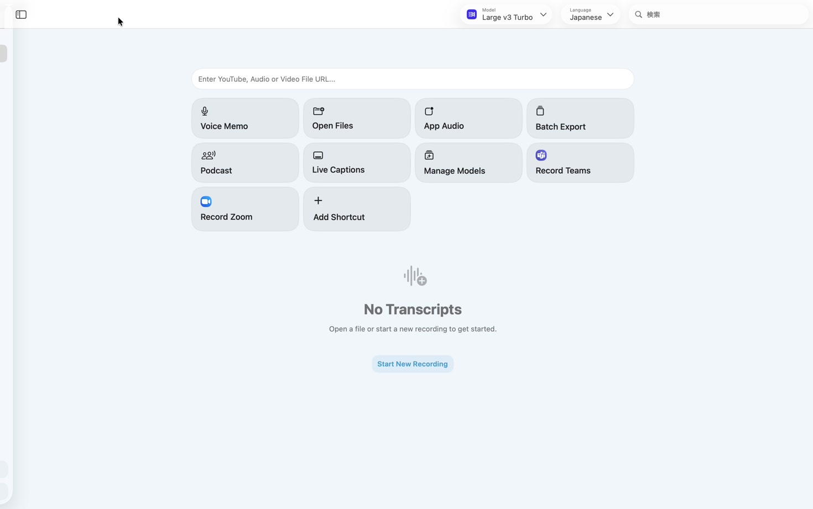
| 項目名 | 種別 | 説明 |
|---|---|---|
| サイドバー非表示状態 | レイアウト | ☰ボタンでサイドバーを隠すと、中央のコンテンツエリアが広くなります。文字起こし結果を読むときに便利です。 |
特定のアプリが出力する音声のみをキャプチャして文字起こしする機能です。
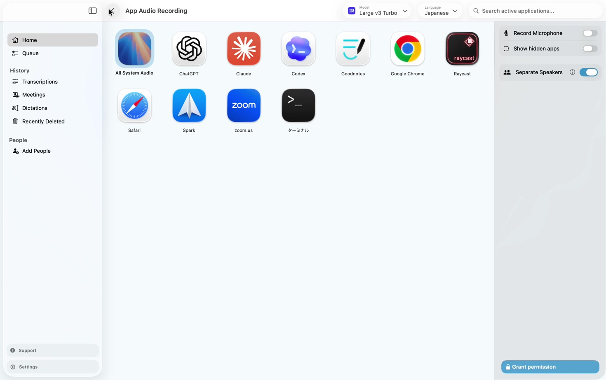
| 項目名 | 種別 | 説明 |
|---|---|---|
| All System Audio（全システム音声） | 選択肢 | Mac全体の音声出力をすべてキャプチャします。どのアプリの音声かを絞り込まないときに使います。 |
| ChatGPT | 選択肢 | ChatGPTアプリの音声のみをキャプチャします。 |
| Claude | 選択肢 | Claudeアプリの音声のみをキャプチャします。 |
| Codex | 選択肢 | Codex（OpenAI）アプリの音声をキャプチャします。 |
| Chrome | 選択肢 | Google Chromeブラウザから出力される音声（YouTube動画、Web会議など）をキャプチャします。 |
| Safari | 選択肢 | Safariブラウザの音声をキャプチャします。 |
| Spark | 選択肢 | メールアプリ「Spark」の音声をキャプチャします。 |
| Zoom | 選択肢 | Zoomのみのオーディオをキャプチャします（Record Zoomボタンと同様）。 |
| Terminal（ターミナル） | 選択肢 | ターミナルアプリの音声出力をキャプチャします。 |
ポッドキャストのエピソードURLやRSSフィードから直接文字起こしできます。
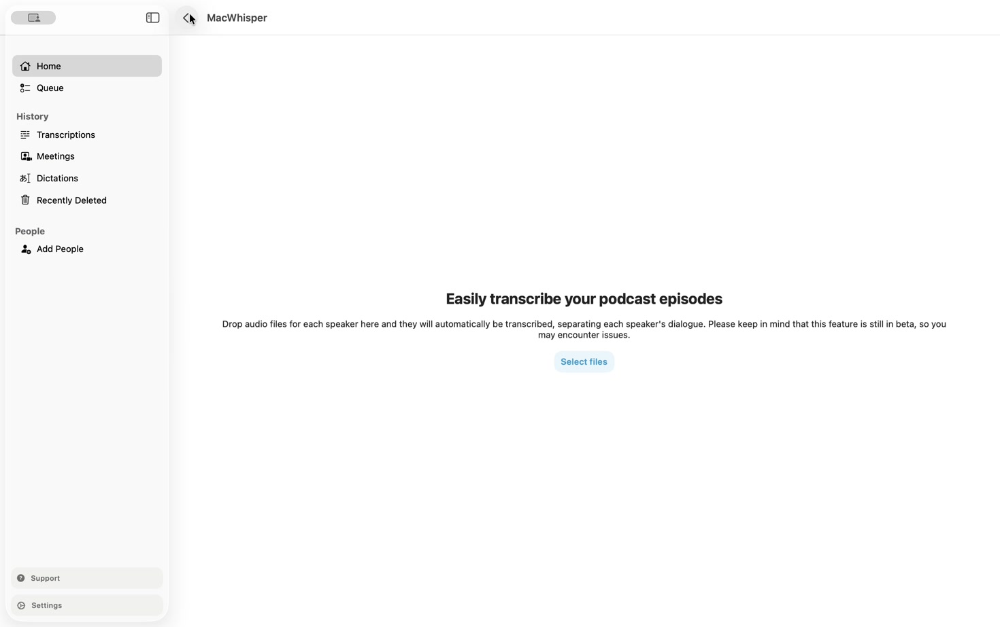
| 項目名 | 種別 | 説明 |
|---|---|---|
| Easily transcribe your podcast episodes（説明文） | 表示 | 「ポッドキャストエピソードを簡単に文字起こしできます」という機能説明。 |
| URL入力フィールド | テキスト入力 | ポッドキャストエピソードの音声ファイルURL、またはRSSフィードのURLを貼り付けます。 |
| Transcribeボタン | ボタン | URLを入力後にこのボタンを押すと、音声をダウンロードして文字起こしを開始します。 |
文字起こしに使うAIエンジン（モデル）を選択します。用途に合わせて使い分けることで精度が上がります。
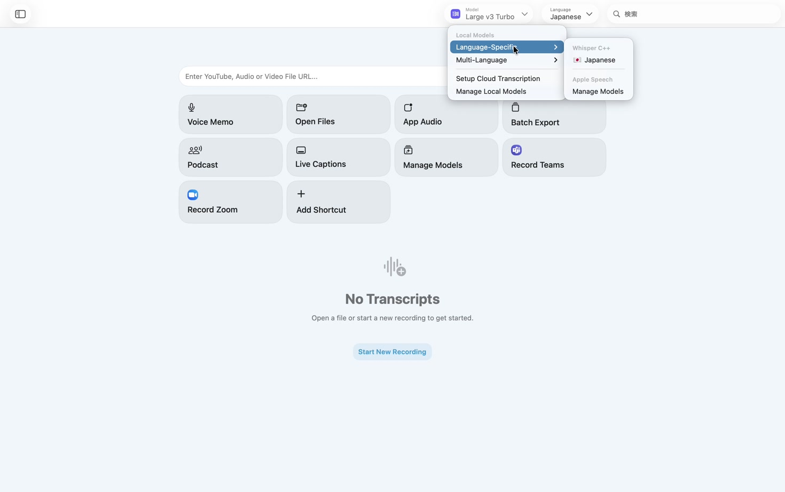
| 項目名 | 種別 | 説明 |
|---|---|---|
| Language-Specific（言語特化）カテゴリ | カテゴリ | 特定の言語に最適化されたモデルのグループ。日本語専用モデルなどが含まれます。 |
| Whisper C++ Japanese（日本語専用モデル） | モデル | 日本語に特化したWhisperモデル。日本語のみを話す講義などで比較候補になります。15.4実機では話者認識対応の表示がないため、複数話者を分けたい場合はQwen3-ASRまたはLarge v3 Turboを選びます。サイズ：1.52GB。 |
| 日本語（Apple Speech） | モデル | AppleのオンデバイスSpeech認識を使う日本語モデル。ダウンロード不要で使えますが、Whisperより精度は低め。 |
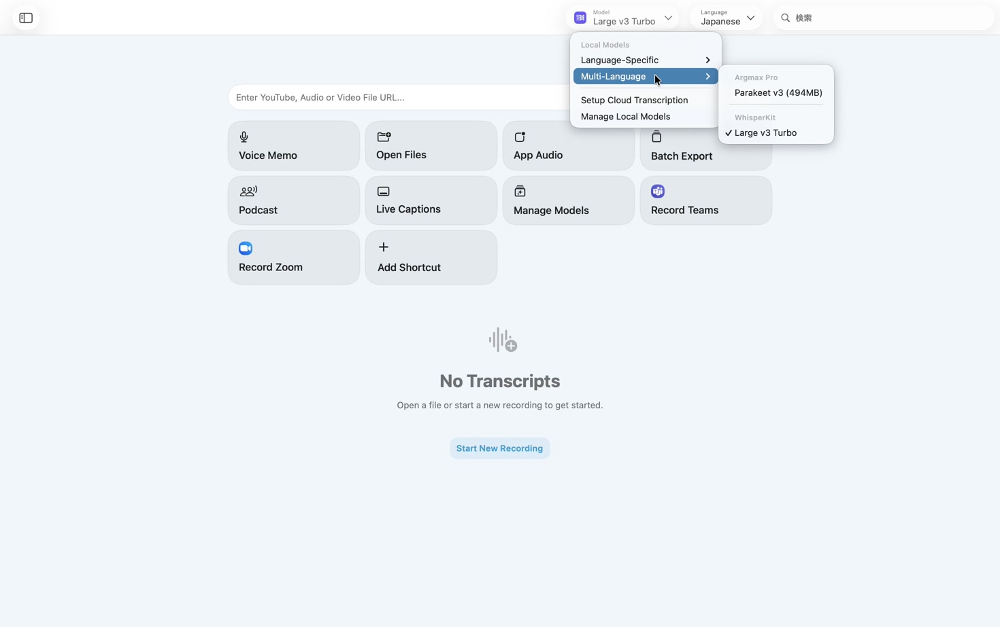
| 項目名 | 種別 | 説明 |
|---|---|---|
| Large v3 Turbo ✓（現在選択中） | モデル | WhisperKitエンジンの高精度モデル。日本語を含む多言語対応。現在このMacに設定されているデフォルトモデルです（チェックマーク表示）。速度と精度のバランスが良い。 |
| Parakeet v3（494MB） | モデル | NVIDIAが開発した英語特化モデル。英語のみを扱う場合は高速・高精度。容量494MBとコンパクト。 |
文字起こしを行う言語を指定します。自動検出にすると話している言語をAIが判断します。
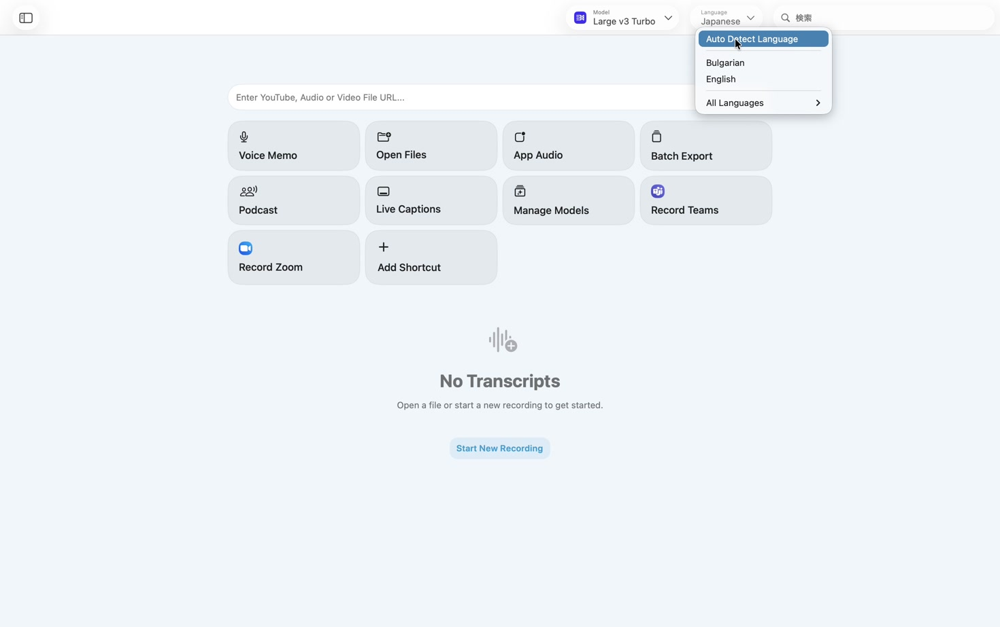
| 項目名 | 種別 | 説明 |
|---|---|---|
| Auto Detect Language（言語自動検出） | 選択肢 | AIが話している言語を自動的に判断します。日英混在の会話など、言語が不明なときに使います。ただし精度は言語指定より若干低くなります。 |
| All Languages（すべての言語） | 選択肢 | 対応しているすべての言語リストを表示します。 |
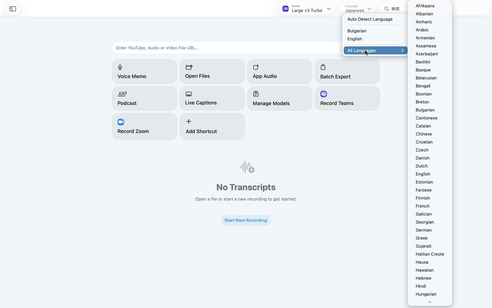
| 項目名 | 説明 |
|---|---|
| Afrikaans〜Hungarian＋ | Whisperが対応する約100言語がアルファベット順に表示されます。日本語（Japanese）もリストにあります。スクロールして選択してください。 |
過去に行った文字起こしの一覧、フォルダ、削除したアイテムを管理します。
15系では文字起こしをフォルダ・サブフォルダで整理できます。ドラッグ＆ドロップとキーボード操作に対応します。
元のファイル名でも検索でき、引用符で囲むと完全一致の語句を探せます。
複数の文字起こしを開いているとき、Open欄の「Close All」でまとめて閉じられます。
履歴を右クリックすると、保存されている録音音声を書き出せます。
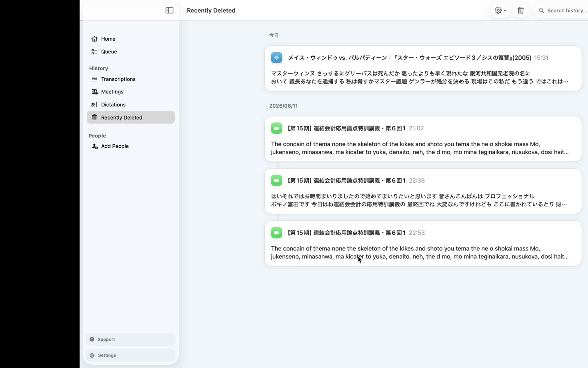
| 項目名 | 種別 | 説明 |
|---|---|---|
| Recently Deleted（最近削除したもの） | 画面タイトル | 削除した文字起こしがここに一時保存されます。MacのゴミBinと似た仕組みです。 |
| 削除済みアイテム（例：Star Warsコンテンツ） | リスト項目 | 削除した文字起こしの一覧。タイトル・日時・内容プレビューが表示されます。クリックで内容確認、右クリックで「復元」できます。 |
| 削除済みアイテム（例：連結会計応用論点…） | リスト項目 | 「第15期 連結会計応用論点特訓講義・第6回1」などの文字起こしが表示されています。誤って削除した講義録音もここから復元できます。 |
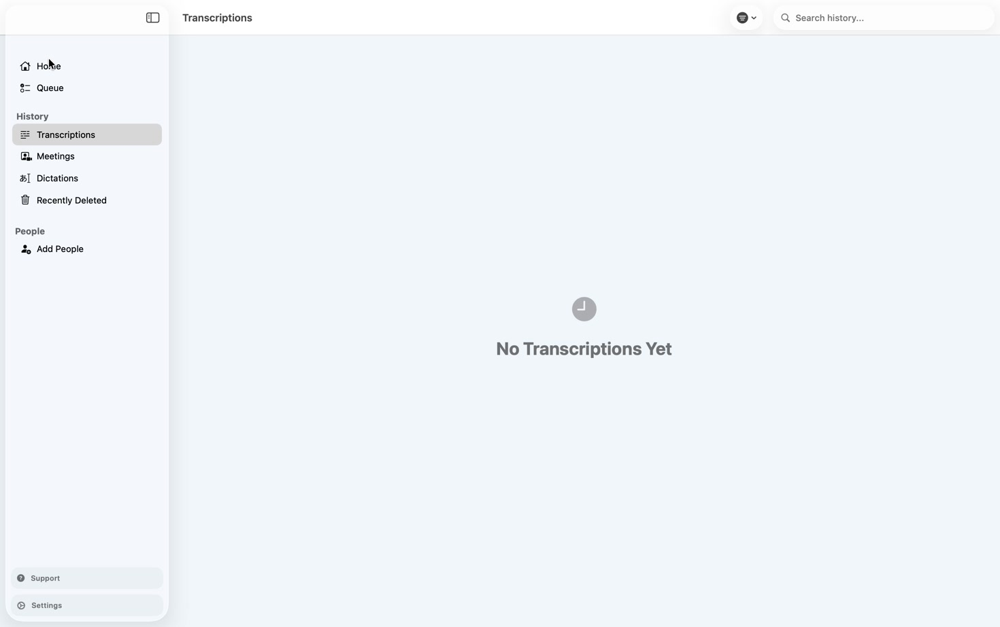
| 項目名 | 種別 | 説明 |
|---|---|---|
| No Transcriptions Yet（まだ文字起こしがありません） | 表示 | 文字起こし履歴がゼロの状態。初回使用時や履歴を全削除した後に表示されます。最初に一度文字起こしすると、この画面に結果が蓄積されていきます。 |
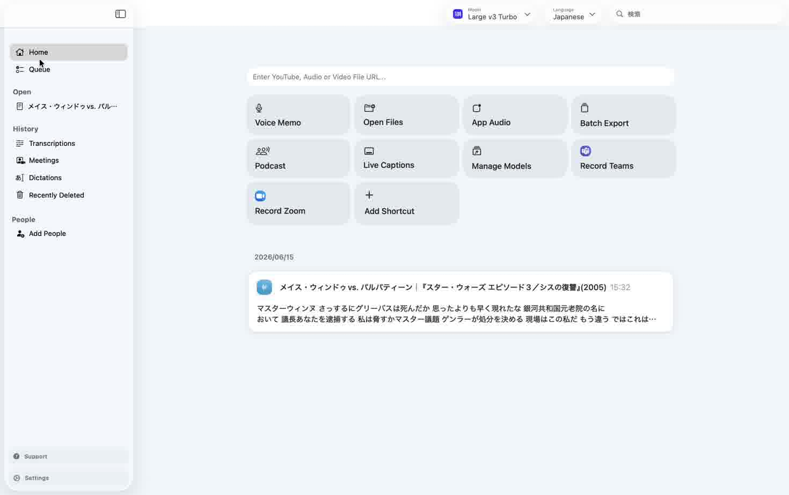
| 項目名 | 種別 | 説明 |
|---|---|---|
| Recent Transcriptions（最近の文字起こし） | 表示 | 過去の文字起こし結果がホーム画面にも表示されるようになります。クリックですぐに詳細を開けます。 |
14系のEditor Viewでは、文字起こし結果を見ながら直接編集できます。タイムスタンプ付きセグメント表示と段落表示の切り替えに加え、文章の修正や話者整理がしやすくなりました。
文字起こし結果をその場で修正し、段落を追加できます。
発言の話者を割り当て直せます。14.6では選択メニューから新しい話者の作成にも対応しました。
必要なセグメントをお気に入りとして目印にできます。
大量のセグメントを含む文字起こしの表示性能が改善されています。
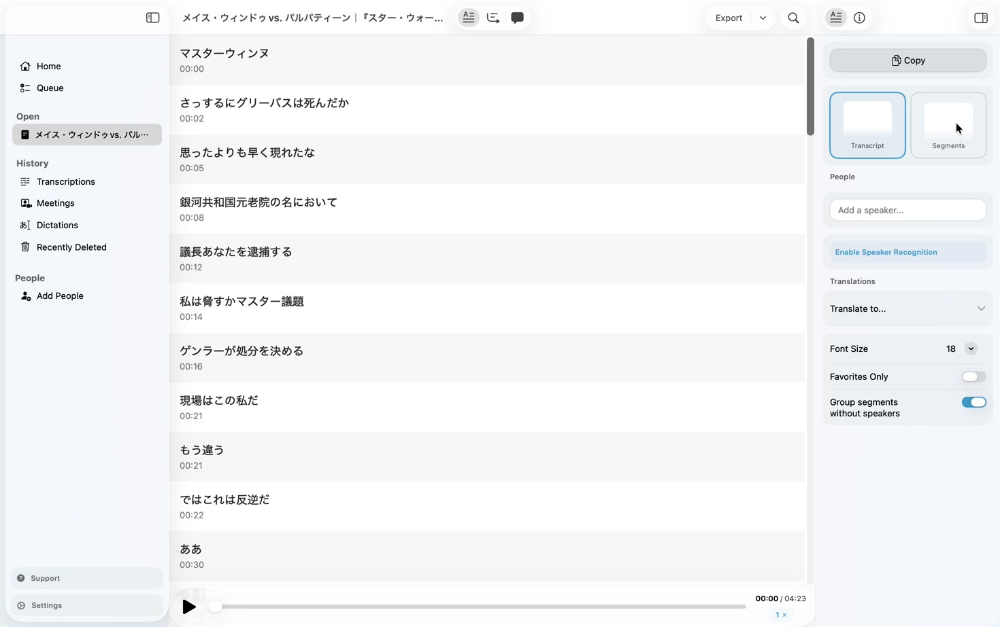
| 項目名 | 種別 | 説明 |
|---|---|---|
| タイムスタンプ（00:00〜） | 表示 | 各セグメントが音声の何秒目から始まるかを表示します。クリックするとその時刻の音声にジャンプして再生できます。 |
| セグメントテキスト | 表示 | 数秒ごとに区切られた発話のかたまり。Whisperが認識した文字起こしが表示されます。 |
| Segments（セグメント）タブ | タブ | タイムスタンプ付きのセグメント表示に切り替えます。正確な発言時刻を確認したいときに使います。 |
| Paragraph（段落）タブ | タブ | 段落形式（読みやすい文章）に切り替えます。コピーして使うときはこちらが便利。 |
| コピーボタン | ボタン | 表示中の文字起こし全文をクリップボードにコピーします。 |
| エクスポートボタン | ボタン | TXT / DOCX / PDF / SRT / VTT など各種形式でファイルに保存します。 |
| AIサマリーボタン | Pro | AIが文字起こし内容を要約します。AIサービス（Claude等）の設定が必要です。 |
| 翻訳ボタン | ボタン | 文字起こし内容を別の言語（日本語→英語など）に翻訳します。設定→翻訳で言語を指定します。 |
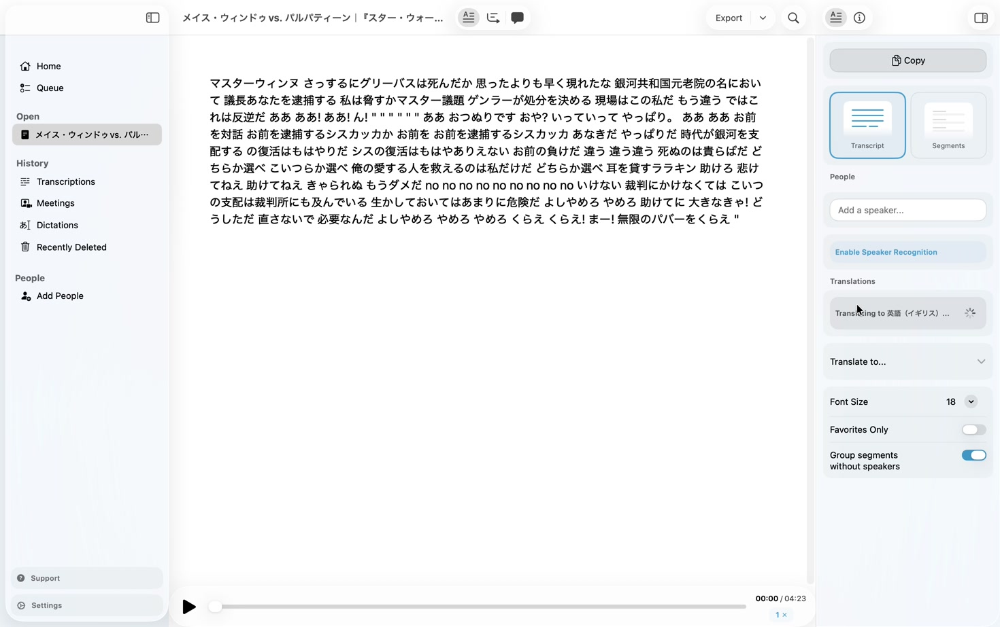
| 項目名 | 種別 | 説明 |
|---|---|---|
| Paragraph（段落）表示 | 表示 | タイムスタンプなしの読みやすい段落形式でテキストを表示します。文章として読む・コピーするときに適しています。 |
| 翻訳進行中インジケーター | 表示 | 翻訳処理中はスピナーや進捗バーが表示されます。AIによる翻訳は音声の長さによって数秒〜数分かかります。 |
| 翻訳結果（Translation） | 表示 | 翻訳が完了すると、元のテキストの下または横に翻訳テキストが表示されます。設定→翻訳で「並べて表示」か「翻訳のみ表示」を選べます。 |
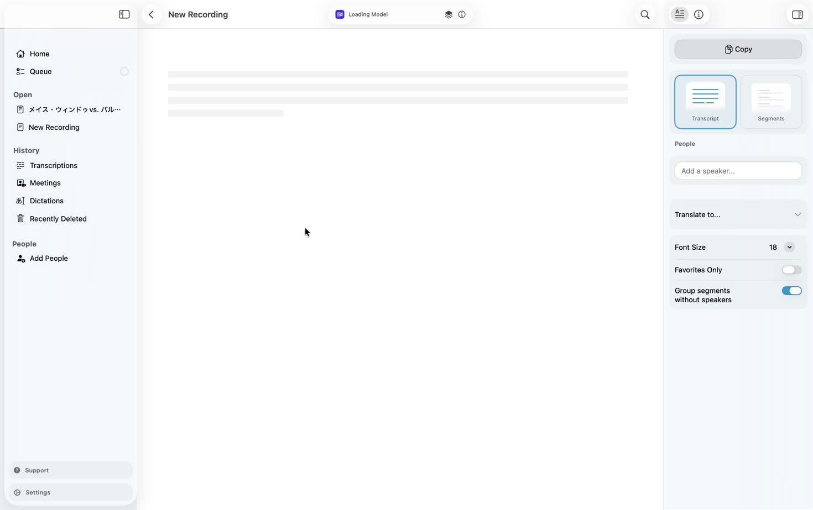
| 項目名 | 種別 | 説明 |
|---|---|---|
| New Recording（新規録音） | 画面タイトル | 録音を開始した直後の画面です。 |
| Loading Model（モデル読み込み中） | ステータス | AIモデル（Large v3 Turboなど）をメモリに展開中です。14.8からモデルはダウンロード直後に準備されるため、最初の文字起こしで発生していた一度きりの準備待ちが減りました。 |
| 録音波形・マイクレベル | 表示 | マイクが音声を拾っているかどうかを波形で確認できます。波形が動いていれば正常に録音されています。 |
| 停止ボタン（■） | ボタン | 押すと録音を終了し、文字起こし処理を開始します。 |
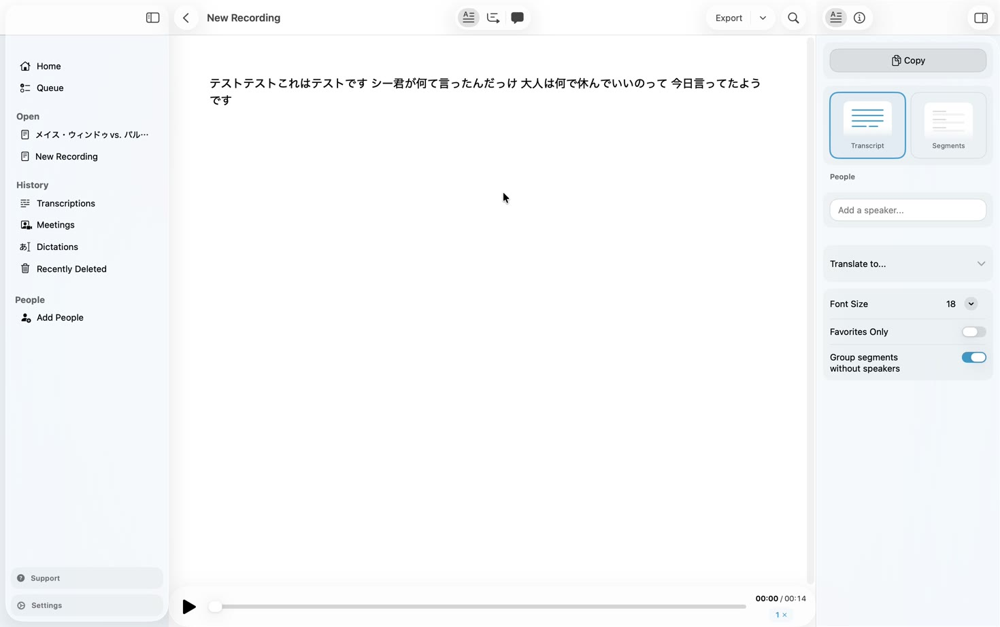
| 項目名 | 種別 | 説明 |
|---|---|---|
| 文字起こしテキスト | 表示 | 録音した音声の文字起こし結果が表示されます。例：「テストテストこれはテストです シー君が何て言ったんだっけ…」のように認識されています。 |
| 再生ボタン（▶） | ボタン | 録音した音声を再生します。テキストと照合して確認できます。 |
| エクスポートボタン | ボタン | 結果をTXT・DOCX・PDF・SRT等のファイルに書き出します。 |
| コピーボタン | ボタン | テキスト全文をクリップボードにコピーします。 |
| AI Summary（AIサマリー） | Pro | AIが内容を要約します。ClaudeやOpenAI等のAPIキー設定が必要です。 |
文字起こし結果をAIと対話しながら加工・分析できます。
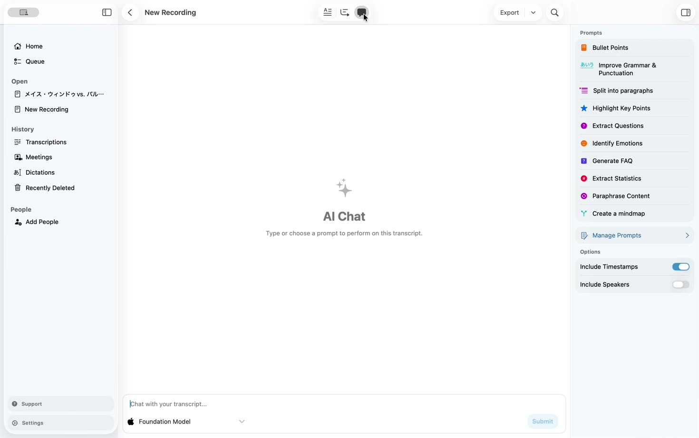
| 項目名 | 種別 | 説明 |
|---|---|---|
| Bullet Points（箇条書き） | プロンプト | 文字起こし内容を箇条書き形式に整理します。議事録やメモ作成に便利。 |
| Improve Grammar & Punctuation（文法・句読点を改善） | プロンプト | AIが文法の誤りや句読点を自動修正します。音声認識の誤りも一部修正されます。 |
| Split into paragraphs（段落に分割） | プロンプト | 長い文字起こしテキストをトピックごとに段落分けします。 |
| Highlight Key Points（重要ポイントをハイライト） | プロンプト | 重要な情報や結論をAIが抽出して強調表示します。 |
| Extract Questions（質問を抽出） | プロンプト | 会話や講義中の「質問」だけをリストアップします。FAQ作成の下書きに使えます。 |
| Identify Emotions（感情を分析） | プロンプト | テキストから話者の感情（喜び・怒り・悲しみなど）を分析します。 |
| Generate FAQ（FAQ生成） | プロンプト | 内容から「よくある質問と回答」形式のFAQを自動生成します。 |
| Extract Statistics（統計を抽出） | プロンプト | テキスト中に含まれる数値・統計データを一覧で抽出します。 |
| Paraphrase Content（言い換え） | プロンプト | 同じ意味を別の表現に書き換えます。 |
| Create a mindmap（マインドマップ作成） | プロンプト | 内容をマインドマップ形式（Markdownまたはテキスト形式）で整理します。 |
| Foundation Model（基盤AIモデル選択） | セレクター | AIチャットで使うAIエンジンを選択します。Apple（オンデバイス）/ Claude / ChatGPT / Ollamaなどを設定→AIサービスで追加できます。 |
| カスタムプロンプト入力 | テキスト入力 | 上のプロンプト以外に、自由に質問や指示を入力できます。例：「この内容を日本語で要約して」など。 |
アプリの基本動作を設定します。
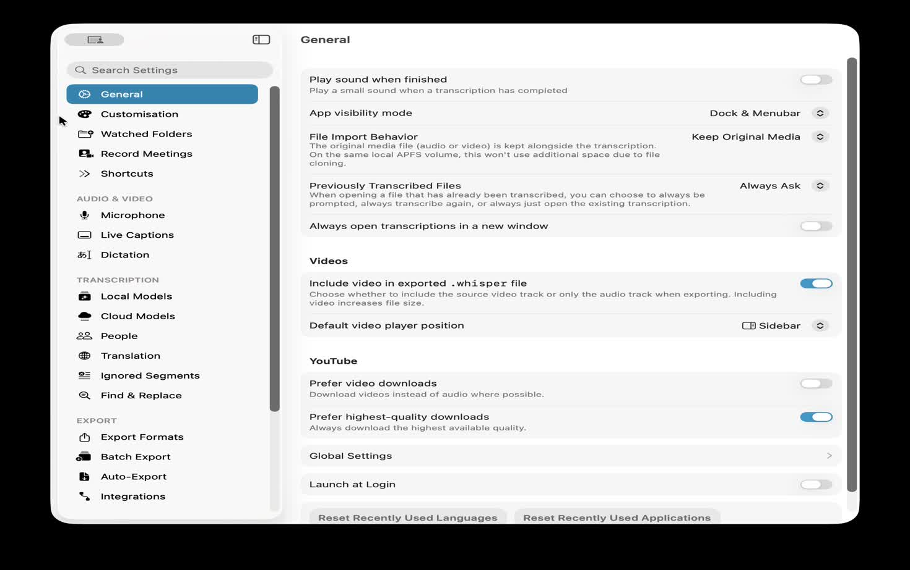
| 項目名 | 種別 | 説明 |
|---|---|---|
| Play sound when finished（完了時に音を鳴らす） | トグル | 文字起こしが完了したときに効果音を鳴らします。ONにしておくと他の作業をしながら完了を気づけます。 |
| App visibility mode（アプリ表示モード） | セレクター | 「Dock & Menubar（DockとメニューBARの両方）」に設定されています。「Menubar Only」にするとDockから消えて常駐型になります。 |
| File Import Behavior（ファイルインポート動作） | セレクター | ファイルをドロップしたときの動作を選択します（即時処理 / 確認ダイアログ表示など）。 |
| Previously Transcribed Files（過去に処理したファイル） | セレクター | 同じファイルを再度ドロップした場合の動作を選択します（スキップ / 再処理など）。 |
| Always open in new window（常に新しいウィンドウで開く） | トグル | ONにすると文字起こし結果がそのつど別ウィンドウで開きます。複数の結果を同時に確認したいときに便利。 |
| Videos セクション | セクション | 動画ファイルを処理するときの詳細設定（フレームレート・解像度など）。 |
| YouTube セクション | セクション | YouTubeのURLから文字起こしするときの設定（字幕優先 / 音声認識など）。 |
| Launch at Login（ログイン時に起動） | トグル | ONにするとMac起動時にMacWhisperが自動的に起動します。常時使う場合はONが便利。 |
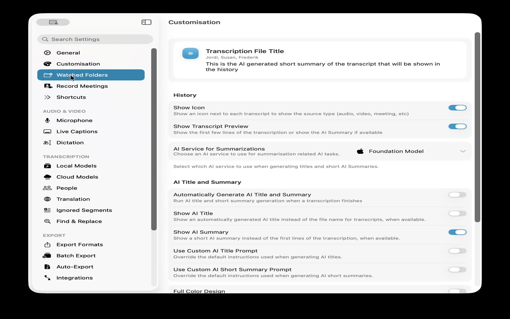
| 項目名 | 種別 | 説明 |
|---|---|---|
| AI-generated title（AIタイトル自動生成） | トグル | ONにするとAIが文字起こし内容から自動でタイトルを付けます。履歴管理が楽になります。 |
| History settings（履歴設定） | セクション | 履歴の保存件数や保存期間を設定します。 |
| AI Service for Summarizations（AI要約サービス） | セレクター | 要約に使うAIを選択します。「Foundation Model（Apple）」がデフォルト。ClaudeやOpenAI APIを設定すれば高精度な要約が得られます。 |
| AI Title and Summary options（AIタイトル・要約オプション） | セクション | タイトルの言語（日本語で生成するかどうか）、要約の長さ、プロンプトのカスタマイズなどを設定します。 |
指定したフォルダに音声ファイルを入れると自動で文字起こしする機能です。
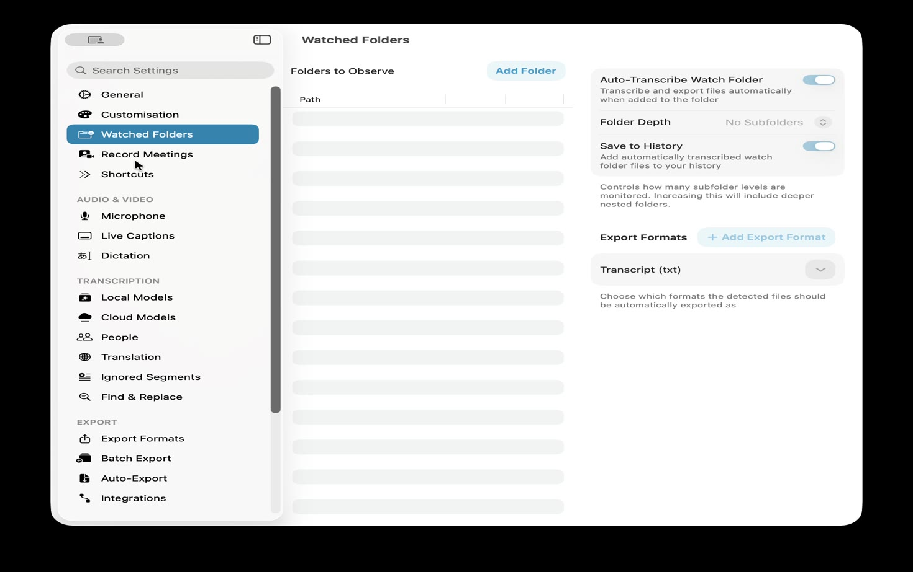
| 項目名 | 種別 | 説明 |
|---|---|---|
| Folders to Observe（監視するフォルダ） | セクション | 自動文字起こしを監視するフォルダを指定します。複数フォルダを追加できます。 |
| Add Folder（フォルダを追加） | ボタン | Finderダイアログが開き、監視するフォルダを選択します。例：「~/Desktop/録音」フォルダを指定しておくと便利。 |
| Auto-Transcribe Watch Folder（監視フォルダを自動文字起こし） | トグル ON | ONになっています。指定フォルダに音声ファイルが追加されると、MacWhisperが自動的に文字起こしを開始します。 |
| Folder Depth（フォルダの深さ） | セレクター | サブフォルダの何階層まで監視するかを指定します。「1」なら直下のファイルのみ。 |
| Save to History（履歴に保存） | トグル ON | ONになっています。自動文字起こしした結果を履歴に保存します。 |
| Export Formats（エクスポート形式） | セレクター | 自動文字起こし後に自動保存するファイル形式を選択します（TXT, DOCX, SRTなど）。 |
15系では、録音しながら話者識別付きの文字起こしを表示できます。15.2.1以降はLive Meeting Transcriptionが初期状態でONです。
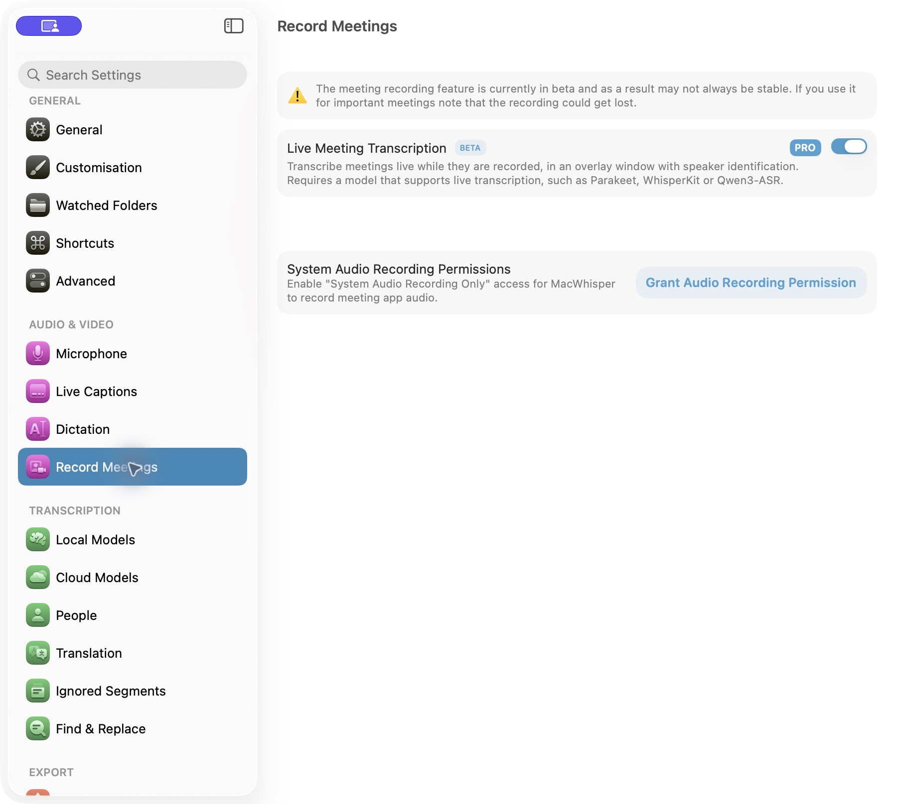
| 項目名 | 種別 | 説明 |
|---|---|---|
| ベータ版警告（Beta notice） | 表示 | 「この機能はベータ版です」という注意書き。動作が不安定な場合があります。 |
| Live Meeting Transcription | トグル | 録音中に別ウィンドウで文字起こしを表示します。話者識別に対応し、Parakeet、WhisperKit、Qwen3-ASRなどのライブ対応モデルが必要です。 |
| System Audio Recording Permissions（システム音声録音権限） | セクション | Macのシステム音声をキャプチャするための権限設定です。macOS 26以降の15.4ではCoreAudioを使うため、「システムオーディオ録音」権限だけで利用でき、画面収録権限は不要です。 |
| Grant Audio Recording Permission（音声録音権限を付与） | ボタン | クリックするとmacOSのシステム設定が開き、MacWhisperへのマイク・音声キャプチャ権限を付与できます。これがないとApp Audioやシステム音声の録音ができません。 |
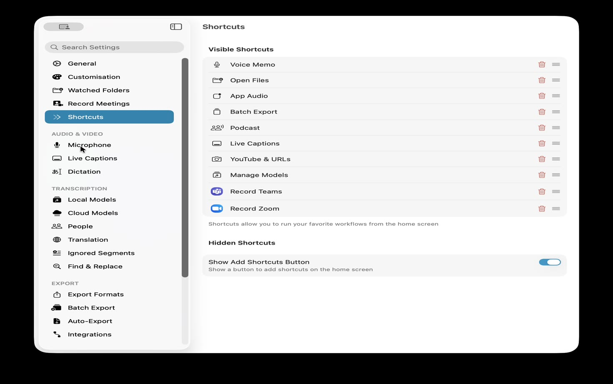
| 項目名 | 種別 | 説明 |
|---|---|---|
| Visible Shortcuts（表示中のショートカット） | セクション | サイドバーに表示されているショートカットボタンの一覧です。 |
| Voice Memo | ショートカット | サイドバーに表示中。キーボードショートカットを割り当てられます。 |
| Open Files | ショートカット | サイドバーに表示中。 |
| App Audio | ショートカット | サイドバーに表示中。 |
| Batch Export | ショートカット | サイドバーに表示中。 |
| Podcast | ショートカット | サイドバーに表示中。 |
| Live Captions | ショートカット | サイドバーに表示中。 |
| YouTube & URLs | ショートカット | サイドバーに表示中。YouTubeやポッドキャストURLを素早く入力できます。 |
| Manage Models（モデル管理） | ショートカット | AIモデルのダウンロード・削除を管理します。 |
| Record Teams / Record Zoom | ショートカット | Teams・Zoom専用の録音ショートカット。 |
| Hidden Shortcuts（非表示のショートカット） | セクション | サイドバーに表示していないが使えるショートカットの一覧。ここから表示に追加できます。 |
| Show Add Shortcuts Button（ショートカット追加ボタンを表示） | トグル | ONにするとサイドバーの下部に「ショートカットを追加」ボタンが表示されます。 |
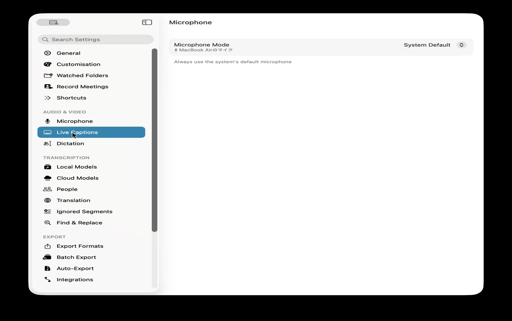
| 項目名 | 種別 | 説明 |
|---|---|---|
| Microphone Mode（マイクモード） | セレクター | 使用するマイクを選択します。「System Default（MacBook Airのマイク）」に設定されています。外付けマイクやヘッドセットを接続すると選択肢が増えます。 |
| System Default（MacBook Airのマイク） | 現在の設定 | MacBook Air内蔵マイクを使用します。静かな環境であれば十分な精度で録音できます。 |
MacWhisperを使って文章を音声入力（ディクテーション）する機能の設定です。
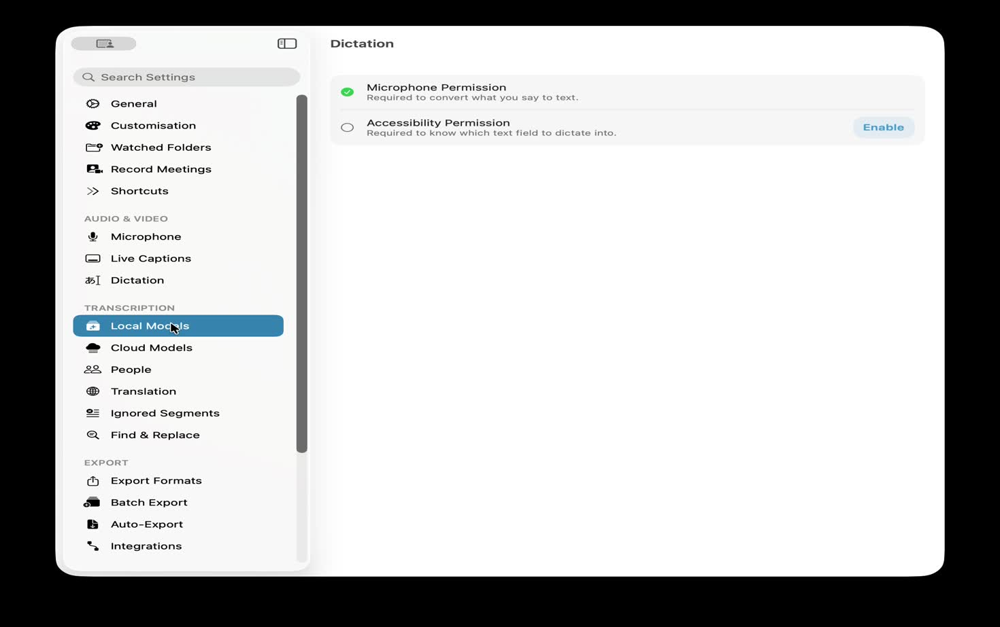
| 項目名 | 種別 | 説明 |
|---|---|---|
| Microphone Permission（マイク権限）✓ 許可済み | ステータス | マイクへのアクセスが「許可済み」です（チェックマーク表示）。 |
| Accessibility Permission（アクセシビリティ権限）要設定 | ステータス | ディクテーション機能（話した言葉を任意のアプリにタイプ入力）を使うには、macOSのアクセシビリティ権限が必要です。「Enable（有効化）」ボタンで設定できます。 |
| Enable（有効化）ボタン | ボタン | クリックするとmacOSのシステム設定→プライバシー→アクセシビリティが開きます。MacWhisperを許可リストに追加してください。 |
Macにダウンロードして使うオフラインAIモデルを管理します。インターネット不要で動作します。
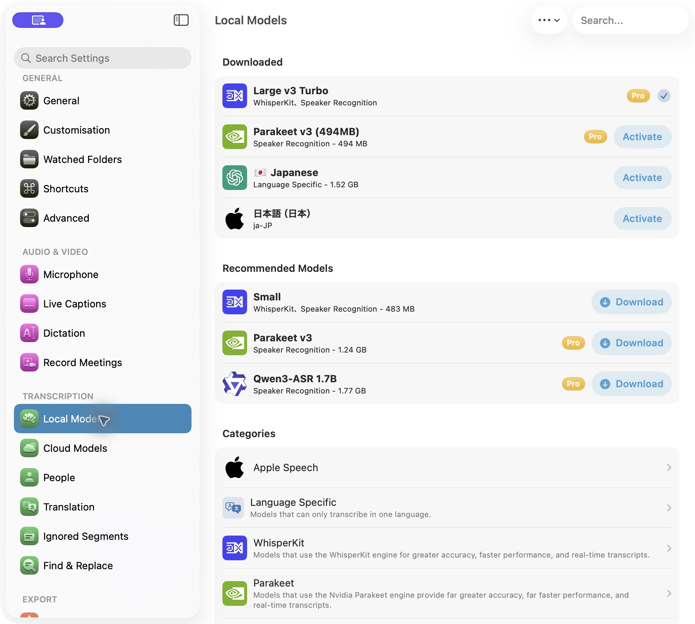
| 項目名 | 種別 | 説明 |
|---|---|---|
| Downloaded（ダウンロード済み）セクション | セクション | すでにMacにダウンロードされているモデルの一覧です。 |
| Large v3 Turbo ✓（使用中） | モデル | WhisperKitエンジンの高精度多言語モデル。現在アクティブに使用中（チェックマーク）。日本語を含む多言語に対応。 |
| Parakeet v3（494MB） | モデル | 英語特化モデル（NVIDIAが開発）。ダウンロード済み。英語のみの会議には最速・高精度。 |
| Japanese（日本語特化） 1.52GB | モデル | 日本語専用のWhisperモデル。ダウンロード済み。ただし15.4実機では「Speaker Recognition」表示がないため、話者認識が必要な音声では対応表示のあるモデルを選びます。 |
| 日本語 ja-JP（Apple Speech） | モデル | AppleのオンデバイスSpeech認識モデル。軽量でダウンロード不要。 |
| Recommended Models（おすすめモデル）セクション | セクション | まだダウンロードしていないおすすめモデルの一覧。 |
| Small（483MB） | ダウンロード可 | 軽量で高速なモデル。精度はLargeより低いが、古いMacや速度重視の場合に。 |
| Parakeet v3（1.24GB） | ダウンロード可 | より高精度な英語モデルの大きいバージョン。 |
| Qwen3-ASR 1.7B（約1.77GB） | Pro・ダウンロード可 | 精度重視の多言語モデル。話者識別とライブ文字起こしに対応し、15.4の実機ではRecommended Modelsに表示されます。 |
| 話者認識モデル | 選択 | 15.3からNemotronまたはPyannoteを選べます。Nemotronは高精度ですが、1つの録音につき最大8話者です。 |
| カテゴリフィルター（Apple Speech / Language Specific / WhisperKit / Parakeet / Qwen3-ASR） | タブ | モデルをカテゴリ別に絞り込みます。Pro専用、話者識別対応、上級者向けでも絞り込めます。 |
インターネット経由でクラウドのAIサービスを使って文字起こしします。15.4の実機では、OpenAIを含む18種類の接続先を確認できます。
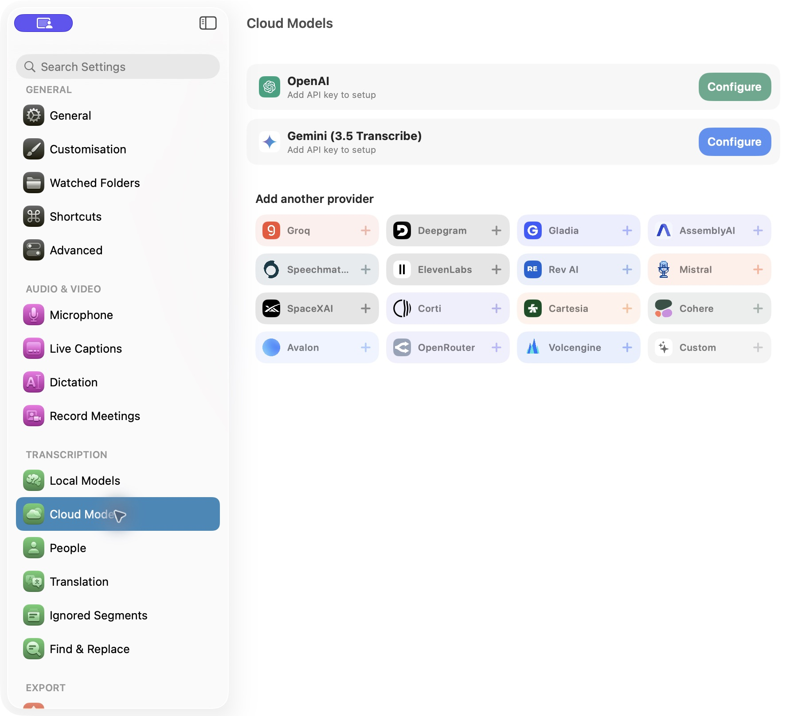
15.4の実機画面です。API課金をしない場合は、この画面のサービスを設定せずLocal Modelsを使います。
| 項目名 | 種別 | 説明 |
|---|---|---|
| OpenAI（Configure） | 設定ボタン | OpenAI（ChatGPTの会社）のWhisper APIを使って文字起こしします。APIキーが必要です。クラウド処理なので高精度ですが料金が発生します。 |
| Add another provider（別のプロバイダーを追加） | ボタン | 他のクラウドサービスを追加します。使いたいサービスを選び、各社で取得したAPIキーを登録します。 |
| Gemini（3.5 Transcribe） | 選択肢 | 14.8.1で追加。日本語を含む多言語の自動判定、話者区別、単語タイムスタンプに対応します。Google AI StudioのAPIキーが必要です。 |
| SpaceXAI（Grok Voice Transcribe 2） | 選択肢 | 15.4で追加されたクラウド文字起こしモデルです。以前の「xAI」表記は15.3から「SpaceXAI」に変更されました。 |
| Groq | 選択肢 | GroqのAPIを使った高速文字起こし。Whisperモデルを超高速で実行できます（無料枠あり）。 |
| Deepgram | 選択肢 | Deepgramの音声認識AIを使います。英語に強い。 |
| ElevenLabs | 選択肢 | ElevenLabsのSTT（音声→テキスト）機能を使います。 |
| Custom（カスタム） | 選択肢 | 任意のAPIエンドポイントを設定できます。 |
出典：Google公式「Gemini 3.5 Transcribe」、MacWhisper公式「Setting Up AI Providers」
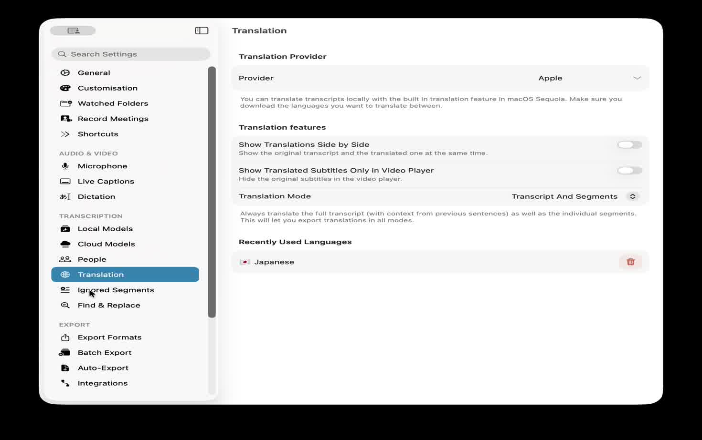
| 項目名 | 種別 | 説明 |
|---|---|---|
| Provider（プロバイダー） | セレクター | 翻訳に使うサービスを選択します。「Apple」に設定されています（オンデバイス翻訳。無料・オフライン）。DeepLやGoogle翻訳も追加可能。 |
| Show Translations Side by Side（翻訳を並べて表示） | トグル | ONにすると原文と翻訳を左右（または上下）に並べて表示します。対訳で確認したいときに便利。 |
| Show Translated Subtitles Only in Video Player（動画プレーヤーでは翻訳字幕のみ表示） | トグル | 動画再生時に翻訳後の字幕のみを表示します（原文字幕を非表示にする）。 |
| Translation Mode（翻訳モード） | セレクター | 「Transcript And Segments（文字起こし全体とセグメント両方）」に設定されています。Transcriptのみ・Segmentsのみに変更できます。 |
| Recently Used Languages（最近使った言語） | 表示 | 「Japanese（日本語）」が表示されています。最近翻訳に使った言語が記録されます。 |
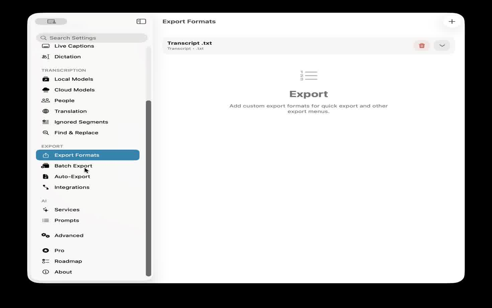
| 項目名 | 種別 | 説明 |
|---|---|---|
| Transcript .txt（テキストファイル） | トグル | プレーンテキスト形式（.txt）でエクスポートします。最もシンプルで汎用性が高い形式。 |
| Export Formats詳細メニュー | セクション | 各形式のトグルでエクスポートする形式を選択します。右側に設定メニュー（AI / Advanced / Pro / Roadmap / About）が表示されています。 |
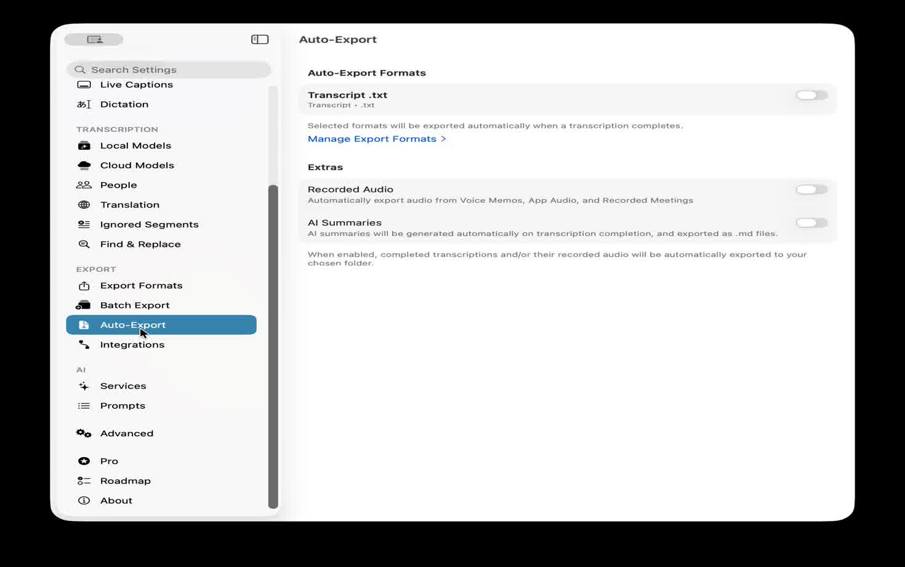
| 項目名 | 種別 | 説明 |
|---|---|---|
| Auto-Export Formats（自動エクスポート形式） | セクション | 文字起こし完了後に自動でファイルに保存する形式を選択します。 |
| Transcript .txt トグル | トグル | ONにすると文字起こしが完了するたびに自動的に.txtファイルとして保存します。 |
| Extras（追加設定）セクション | セクション | 追加で自動保存するコンテンツを選べます。 |
| Recorded Audio（録音音声） | トグル | ONにすると録音した音声ファイル自体も自動保存します。 |
| AI Summaries（AI要約） | トグル | ONにするとAI要約も自動保存します（AIサービス設定が必要）。 |
| 保存フォルダの説明 | 表示 | 自動エクスポートファイルがどのフォルダに保存されるかを説明しています。デフォルトはMacのDocumentsフォルダ。 |
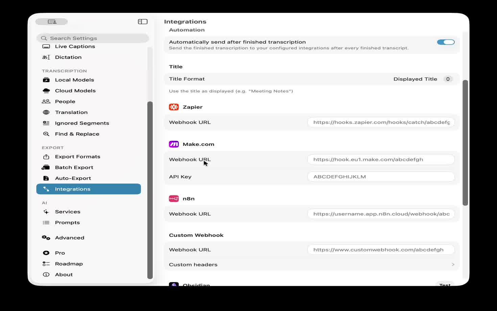
| 項目名 | 種別 | 説明 |
|---|---|---|
| Automation（自動化） | セクション | 文字起こし完了後に自動でアクションを実行する設定です。 |
| Automatically send after finished transcription ON（文字起こし完了後に自動送信） | トグル ON | ONになっています。文字起こしが終わったら自動で後述のWebhookに送信します。 |
| Title Format（タイトル形式） | テキスト | Webhookで送信するデータのタイトル形式を指定します。 |
| Zapier webhook | 入力欄 | ZapierのWebhook URLを入力します。Zapierで自動化フローを作ると「文字起こし完了→Slackに通知」「→Googleスプレッドシートに保存」などが実現できます。 |
| Make.com webhook + API Key | 入力欄 | Make.com（旧Integromat）との連携設定。Make.comのシナリオURLとAPIキーを入力します。 |
| n8n webhook | 入力欄 | オープンソースの自動化ツール「n8n」のWebhook URLを入力します。 |
| Custom Webhook（カスタムWebhook） | 入力欄 | 任意のWebhook URLを入力します。自社システムへの連携などに使います。 |
| Obsidian（見切れ） | 連携 | ノートアプリ「Obsidian」との連携設定。文字起こし結果をObsidianのVaultに自動保存できます。 |
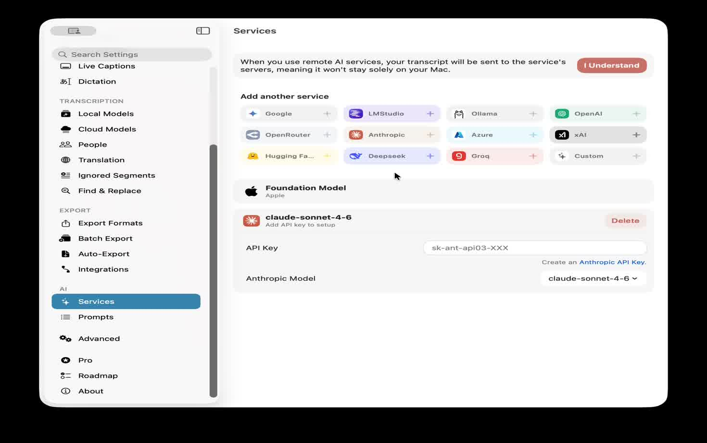
15.2.1以降は、保存したAIサービスに「Test Connection」が表示され、APIキーや接続先が正しく応答するか確認できます。
| 項目名 | 種別 | 説明 |
|---|---|---|
| Add another service（別のサービスを追加） | ボタン | AIチャット・要約に使う外部サービスを追加できます。 |
| Test Connection（接続テスト） | ボタン | 登録したAIサービスが正しく設定され、応答できる状態かを確認します。失敗した場合はAPIキー、利用枠、モデル名を見直してください。 |
| Google（Gemini） | 選択肢 | Google GeminiのAPIを使います。APIキーが必要。 |
| LM Studio | 選択肢 | ローカルで動くLLMツール「LM Studio」と連携します。オフラインで高精度なAIが使えます。 |
| Ollama | 選択肢 | ローカルLLMツール「Ollama」と連携します。LlamaやMistralなどのモデルが使えます。 |
| OpenAI（ChatGPT） | 選択肢 | OpenAI APIの対応モデルを使います。APIキーが必要で、ChatGPTの契約とは料金体系が別です。 |
| OpenRouter | 選択肢 | 複数のAIモデルをまとめて使えるサービス「OpenRouter」と連携します。 |
| Anthropic（Claude） | 選択肢 | ClaudeのAPIを使います。高精度な要約・分析が可能です。 |
| Azure（Microsoft Azure OpenAI） | 選択肢 | Microsoft Azure経由のOpenAI APIを使います。 |
| SpaceXAI（旧xAI） | 選択肢 | GrokモデルのAPIを使います。15.3からサービス名の表示がSpaceXAIへ更新されました。 |
| Hugging Face | 選択肢 | Hugging FaceのホスティングAPIを使います。 |
| Deepseek | 選択肢 | 中国発の高性能AI「Deepseek」のAPIを使います。 |
| Groq | 選択肢 | Groq（超高速AI推論）のAPIを使います。無料枠が大きく試しやすいです。 |
| Custom（カスタム） | 選択肢 | 任意のOpenAI互換APIエンドポイントを設定できます。 |
| Foundation Model（基盤モデル）→ Apple | 現在の設定 | デフォルトはAppleのオンデバイスAI（Apple Intelligence）を使用します。無料・オフラインで動作します。 |
| 保存済みAIサービス | 設定済み | 登録したサービスとモデルが表示されます。利用可能なモデル名は各社の更新で変わるため、Test Connectionで動作を確認してください。 |
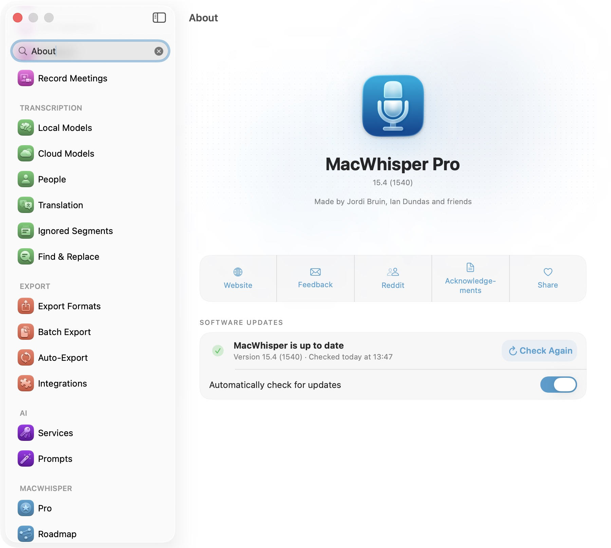
2026年10月9日に撮影した15.4（1540）の実機画面です。
| 項目名 | 種別 | 説明 |
|---|---|---|
| MacWhisper Pro 15.4 (1540) | バージョン | 2026年10月9日に実機と公式更新フィードで確認したバージョンです。15系はmacOS 15以上が必要です。 |
| Made by Jordi Bruin, Ian Dundas and friends | 開発者 | MacWhisperの開発者はJordi BruinとIan Dundas、およびそのチームです。オランダのインディー開発者です。 |
| Feedback（フィードバック） | ボタン | 開発者にフィードバック・バグ報告を送ります。 |
| ボタン | MacWhisperのRedditコミュニティを開きます。ユーザー同士の情報交換の場です。 | |
| Acknowledgements（謝辞） | ボタン | 使用しているオープンソースライブラリの一覧です。 |
| Share with friends（友達にシェア） | ボタン | MacWhisperを友人に紹介するためのシェアリンクを生成します。 |